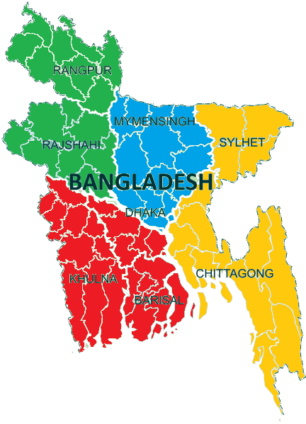

Bangladesh
Bangladesh is a unitary parliamentary democracy and constitutional republic following the Westminster system of governance. Bengalis make up 98% of the total population of Bangladesh,[4][5] and the large Muslim population of Bangladesh makes it the third-largest Muslim-majority country. The country is divided into eight administrative divisions and 64 districts.
Button
